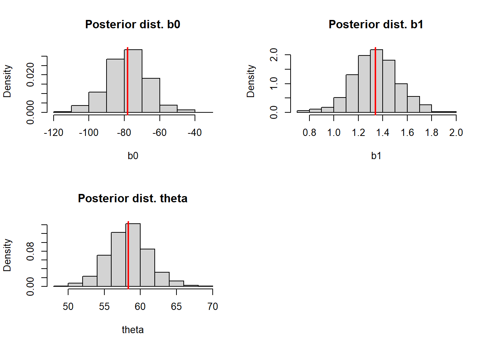
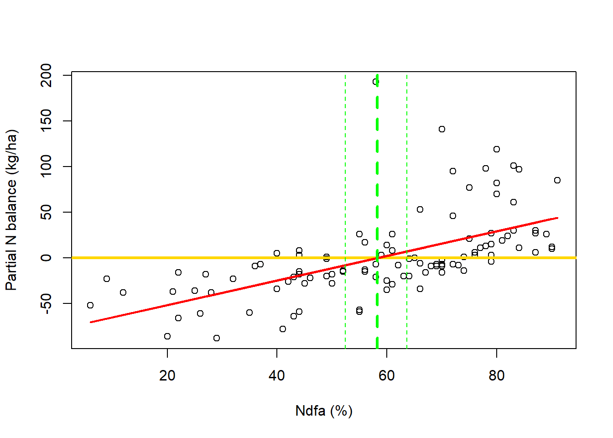
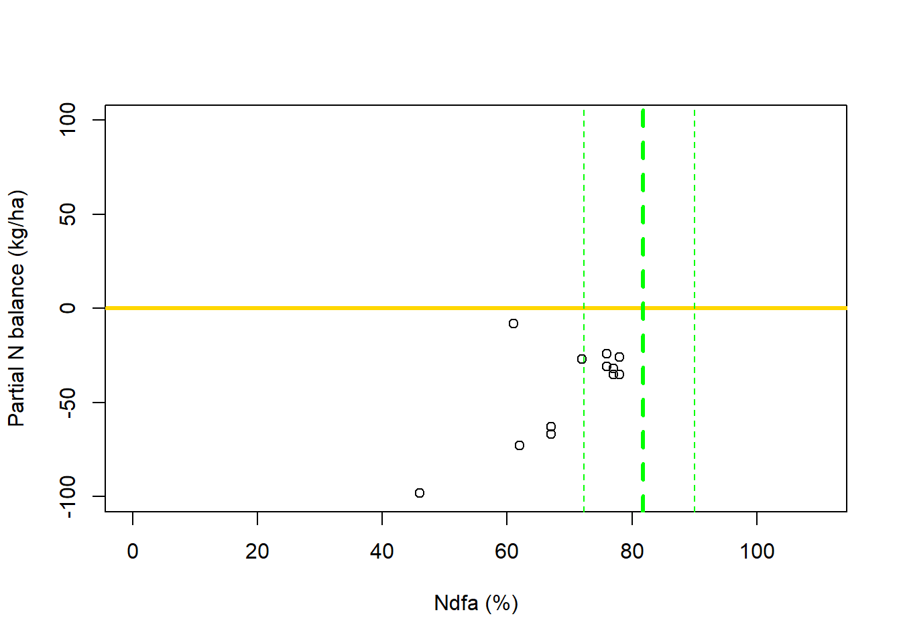

Welcome to day 1!
In this workshop material, theory and R codes are mixed. Throughout the workshop, our main focus will be on understanding the why. We want to demonstrate that all codes in this workshop are used after deep understanding of what is going on behind them, after we thought about our models in depth.
We will have the following structure:
Day 1: Linear models and parameter estimation
Day 2: Nonlinear models
Day 3: Bayesian nonlinear models
More importantly, don’t panic! We will be learning together, slowly. We do not expect you to come into the workshop (or leave it) knowing everything.
Our goal is to provide an immersion into the topic and some initial guidance, so you can move forward with your own projects and continued learning.
Please feel free to stop me and ask questions at any time. I will answer it to the best of my knowledge, and if I don’t know the answer, either Trevor will jump in or I will make sure to come back to you with a clear explanation in a later moment.
Linear models and parameter estimation
Outline:
Section 1: What is and what isn’t a linear model
Section 2: Estimation and Inference: A linear model example using:
Loss function approach
Likelihood-based approach
Bayesian approach
Why Bayesian may be useful?
Questions
- Recommended - Base for Day 2
Optional - For practice only!
What we expect you to learn on Day 1:
What is a linear model and what is not
There are different types of estimation, and they have different assumptions
When it is wroth it to work with more assumption heavy approaches
Section 1: What is and what isn’t a linear model
Recap on linear models
Recall the famous intercept-and-slope model, written in the “model equation form”1:
\[ y_i = \beta_0 + x_i\beta_1 + \varepsilon_i \]
Here we have the observed value of the \(i\)th observation (\(y_i\)), the intercept (\(\beta_0\)), representing the level of \(y\) when \(x\) = 0, the slope (\(\beta_1\)), which for a continuous \(x_i\), it represents the change in \(y\) given a one unit change in \(x\), and the residual (\(\varepsilon_i\)) that represents the different between the observation and the model line for each point.

What makes a model linear?
Other examples of linear models are:
Polynomial regression:
Extend the linear regression in a way that the relationship between the predictors and the response is nonlinear. A polynomial function is a special case of base function2.
\[ y_i = \beta_0 + \beta_1x_i+\beta_2x_i^2+\varepsilon_i \]

Regression splines:
In this type of model, \(x\) is partitioned by \(K\) points and within each space between these points, a polynomial model is fitted. Splines are a special case of piecewise degree-d polynomial, in which a constraint ensures that it is continuous. This means that at each “knot” (\(K\)), that define a breaks in \(x\), the line remains continuous. Simple piecewise polynomial regression exist, but they do not ensure this continuity.
\[ y_i = \beta_0 + \beta_1b_1(x_i) + \beta_2b_{K + 2}(x_i) + \varepsilon_i \]

Shape \(\neq\) Linearity
Linear models \(\neq\) Simplicity
Simple rule: A model is linear if:
All unknown parameter only multiplies known quantities
All parameters are added together
All parameters are outside nonlinear functions.
\[ \mathbf{\hat{y}} = \sum_i\beta_ib_i(\mathbf{x}) \]
What about nonlinear models?
In simple terms, in nonlinear models, parameters are inside nonlinear functions.
Example:
\[ y_i = \beta_0*e^{\beta_1x_i} + \varepsilon_i \]

Checklist:
All unknown parameters only multiply known quantities? X -> \(\beta_0*e^{\beta_1x_i}\)
All parameters are added together? X -> \(\beta_0*e^{\beta_1x_i}\)
All parameters are outside nonlinear functions? X -> \(e^{\beta_1x_i}\)
How do we work with nonlinear models?
Fit it as it is.
Linearization.
- More about both on day 2!
How do we chose a a model?
What is your research question?
- Pattern (phenomenological) vs Process (mechanistic)
What do you know about what you are investigating?
What do you want from the model?
- Focus: Inference? Prediction? Both?
Highlight from Section 1:
Shape \(\neq\) Linearity: Not being a line does not mean it is not linear!
Linear models \(\neq\) Simplicity: Linear models can be quite complex (e.g. Splines).
Model selection is more of a philosophical question, but some points might help you on the decision.
Section 2: Estimation and Inference: A linear model example
Estimation: The process of obtaining numerical values for the unknown quantities (parameters) of a model from observed data.
Inference: Interpreting these estimated parameters in the context of the population or data-generating process (model). Inference is made on non-observable quantities of interest, like the parameters (e.g. \(\beta_1\)) and involves quantifying uncertainty and drawing conclusions beyond the observed sample.
Example: Understanding nitrogen balance in grain legumes
Details from Palmero et al. 2024
A simple intercept-slope linear model:
\[ y_i = \beta_0 + \beta_1x_i + \varepsilon_i \]
in which:
\(y_i\) represents the proportion (%) of nitrogen (N) derived from the atmosphere (Ndfa)
\(x_i\) represents the partial N balance (fixed N - removed N by grains) in kg/ha
The research question: Which Ndfa (\(y_i\)) leads to a neutral N balance (\(x_i = 0\))?
Code

I. Loss function approach
How does it works?

Loss function: How we calculate the distance between observed and predicted by the model.
- Several different options, the most famous: Least Square - \(\sum_{i = 1}^n(y_i - \beta_0 - \beta_1x_i)^2\)
- Least Square characteristics: Small residuals = Small loss / Large residuals = Large loss
This approach produces a line of best fit based on values for \(\beta_0\) and \(\beta_1\) that minimizes the distance.
At this point: No uncertainty around estimation, no p-values, no inference, only parameter values!
A loss function by itself gives no inference. Inference comes from assumptions on the residuals (\(\varepsilon_i\))
Here: \(\varepsilon_i = y_i - \hat{y}_i\)
For our example:
Fit a simple intercept-slope linear model to data using least squares and calculate the value of Ndfa that is needed to achieve a neutral N balance (\(\theta\)).
\[ y_i = \beta_0 + \beta_1x_i + \varepsilon_i \]
Theta is a derived quantity3 calculated as:
\[ Ndfa = -\frac{\beta_0}{\beta_1} \]
Code
## [1] 58.26843Visual representation of our line of best fit and \(\theta\):
Code

II. Likelihood-based approach
How does it work?
Instead of minimizing the distance, we now maximize the likelihood function.
What likelihood do?
According to the data-generating process (model + assumption) and data, estimate values of the parameters that are more plausible.
No more a line of best fit, but an expectation/mean.
To define a likelihood, we make a distributional assumption for the random error term. The most common:
\[ \varepsilon_i \sim N(0, \sigma^2) \]
- This distributional assumption is about how the data is generated, it means we believe the deviations between the observed data and the model predictions arise from a normal distribution with mean 0 and variance \(\sigma^2\).

For our example:
Fit a simple intercept-slope linear model to data using least squares and calculate the value of Ndfa that is needed to achieve a neutral N balance (\(\theta\)).
\[ y_i = \beta_0 + \beta_1x_i + \varepsilon_i \\ \varepsilon_i \sim N(0, \sigma^2) \]
or
\[ y_i \sim N(\beta_0 + \beta_1x_i, \sigma^2) \]
Code
library(nlme)
# Fit the model
m2 <- gls(PartNbalance ~ Ndfa, data = df_a, method = "ML")
# Ndfa to achieve neutral N balance
b0hat_ml <- as.numeric(coef(m2)[1]) # extract the intercept
b1hat_ml <- as.numeric(coef(m2)[2]) # extract the slope
thetahat_ml <- -b0hat_ml/b1hat_ml # calculate theta
thetahat_ml## [1] 58.26843Here we can construct confidence intervals by approximating the standard errors using delta method4.
Code
## [1] 52.88317 63.65370Visual representation of our expected values and \(\hat{\theta}\):
Code
plot(df_a$Ndfa, df_a$PartNbalance, xlab = "Ndfa (%)", ylab = "Partial N balance (kg/ha)")
abline(a = 0, b = 0, col = "gold", lwd = 3)
abline(m2, col = "red", lwd = 3)
abline(v = thetahat_ml, lwd = 3, lty = 2, col = "green")
abline(v = theta_ci[1], lwd = 1, lty = 2, col = "green")
abline(v = theta_ci[2], lwd = 1, lty = 2, col = "green")
What changes from the loss function approach?
More complexity;
Uncertainty estimation (around estimated \(\hat{\theta}\));
We could also explore uncertainty for the expected value (red line).
III. Bayesian approach
How does it work?
The focus now is not on the most likely value of the parameter, it is on the whole distribution, all values it can assume.
In this approach, we have additional assumptions on the unknown parameters.
We use prior knowledge about the system, to inform our parameters to be estimated.
Bayesian estimation does not contradict Maximum Likelihood, it extends it!

For our example:
Fit a simple intercept-slope linear model to data using least squares and calculate the value of Ndfa that is needed to achieve a neutral N balance (\(\theta\)).
\[ y_i = \beta_0 + \beta_1x_i + \varepsilon_i \\ \varepsilon_i \sim N(0, \sigma^2)\]
We will re-write this model, using distributional notation and adding our additional assumptions for other unknown quantities:
\[
\mathbf{y} \sim N(\boldsymbol{\beta_0} + \boldsymbol{\beta_1}\mathbf{x}, \boldsymbol{\sigma}^2) \\ \boldsymbol{\beta_0} \sim N(0, 10^6) \\ \boldsymbol{\beta_1} \sim N(0, 10^6) \\ \boldsymbol{\sigma} \sim Gamma(2.5, 0.05)
\]
This notation helps to clearly identify our assumptions!
Code
library(rjags)
library(coda)
set.seed(2026)
y <- df_a$PartNbalance
x <- df_a$Ndfa
# JAGS code
data_line <- list("y" = y, "x" = x, "N" = nrow(df_a))
initials <- list(
list("b0" = 0.1, "b1" = 0.1, "sigma" = 0.1)
)
model_string <- "model {
# Likelihood
for(i in 1:N){
y[i] ~ dnorm(mu[i], tau)
mu[i] <- b0 + b1*(x[i])
}
# Priors
b0 ~ dnorm(0, 1/10^6)
b1 ~ dnorm(0, 1/10^6)
sigma ~ dgamma(2.5, 0.05)
# Derived quantity
theta <- -b0/b1
tau <- 1/(sigma^2)
}"
m3 <- jags.model(textConnection(model_string), inits = initials, data = data_line, n.chains = 1)
update(m3, n.iter = 1000)
samples <- coda.samples(m3, variable.names = c("b0", "b1", "tau", "theta", "sigma"), n.iter = 1000)
#summary(samples)
#plot(samples)
# Extract draws and calculate expected line
draws <- as.matrix(samples)
b0_hat <- mean(draws[, "b0"])
b1_hat <- mean(draws[, "b1"])
pred_mean <- b0_hat + b1_hat*xCode
par(mfrow = c(2, 2))
hist(draws[, "b0"], freq = FALSE, main = "Posterior dist. b0", xlab = "b0")
abline(v = mean(draws[, "b0"]), lwd = 2, col = "red")
hist(draws[, "b1"], freq = FALSE, main = "Posterior dist. b1", xlab = "b1")
abline(v = mean(draws[, "b1"]), lwd = 2, col = "red")
hist(draws[, "theta"], freq = FALSE, main = "Posterior dist. theta", xlab = "theta")
abline(v = mean(draws[, "theta"]), lwd = 2, col = "red")
par(mfrow = c(1, 1))
Code
theta_CrI <- quantile(draws[, "theta"], c(0.025, 0.975))
plot(df_a$Ndfa, df_a$PartNbalance, xlab = "Ndfa (%)", ylab = "Partial N balance (kg/ha)")
abline(a = 0, b = 0, col = "gold", lwd = 3)
lines(df_a$Ndfa, pred_mean, col = "red", lwd = 2)
abline(v = mean(draws[, "theta"]), lwd = 3, lty = 2, col = "green")
abline(v = theta_CrI[1], lwd = 1, lty = 2, col = "green")
abline(v = theta_CrI[2], lwd = 1, lty = 2, col = "green")
What changes?
| Method | b0 | b1 | theta | theta_l | theta_u |
|---|---|---|---|---|---|
| LS | -78.38 | 1.35 | 58.27 | ||
| ML | -78.38 | 1.35 | 58.27 | 52.88 | 63.65 |
| Bay | -78.64 | 1.35 | 58.22 | 52.45 | 63.65 |
Why?
Simple model
Lot’s of observations - No deficiency on informational content
Why Bayesian might be useful?
Code

Considerably less observations and balance (\(\theta\)) is never observed.
Using Likelihood:
Code
# Fit the model
m4 <- gls(PartNbalance ~ Ndfa, data = df_b, method = "ML")
# Ndfa to achieve neutral N balance
b0hat_ml2 <- as.numeric(coef(m4)[1]) # extract the intercept
b1hat_ml2 <- as.numeric(coef(m4)[2]) # extract the slope
thetahat_ml2 <- -b0hat_ml2/b1hat_ml2 # calculate theta
theta_se2 <- deltamethod(~ -x1/x2, mean = coef(m4), cov = vcov(m4))
theta_ci2 <- c(thetahat_ml2-1.96*theta_se2, thetahat_ml2+1.96*theta_se2)
plot(df_b$Ndfa, df_b$PartNbalance, xlim = c(0, 110), ylim = c(-100, 100), xlab = "Ndfa (%)", ylab = "Partial N Balance (kg/ha)")
abline(a = 0, b = 0, lwd = 3, col = "gold")
abline(m4, lwd = 3, col = "red")
abline(v = thetahat_ml2, lwd = 3, lty = 2, col = "green")
abline(v = theta_ci2[1], lwd = 1, lty = 2, col = "green")
abline(v = theta_ci2[2], lwd = 1, lty = 2, col = "green")
Using Bayesian:
Code
set.seed(2026)
y <- df_b$PartNbalance
x <- (df_b$Ndfa)/100
# JAGS code
data_line <- list("y" = y, "x" = x, "N" = nrow(df_b))
initials <- list(
list("theta" = 0.1, "b1" = 0.1, "sigma" = 0.1)
)
model_string <- "model {
# Likelihood
for(i in 1:N){
y[i] ~ dnorm(mu[i], tau)
mu[i] <- -b1*theta + b1*(x[i])
}
# Priors
b1 ~ dgamma(1.6, 0.8)
theta ~ dbeta(62.52, 14.06)
sigma ~ dgamma(2.5, 0.05)
# Derived quantity
b0 <- -b1*theta
tau <- 1/(sigma^2)
}"
m5 <- jags.model(textConnection(model_string), inits = initials, data = data_line, n.chains = 1)
update(m5, n.iter = 1000)
samples2 <- coda.samples(m5, variable.names = c("b0", "b1", "tau", "theta", "sigma"), n.iter = 1000)
#summary(samples2)
#plot(samples2)
# Extract draws and calculate expected line
draws2 <- as.matrix(samples2)
theta_hat2 <- mean(draws2[, "theta"])
b1_hat2 <- mean(draws2[, "b1"])
pred_mean2 <- b1_hat2* + b1_hat2*xCode
theta_CrI2 <- quantile(draws2[, "theta"], c(0.025, 0.975))
plot(df_b$Ndfa, df_b$PartNbalance, xlab = "Ndfa (%)", ylab = "Partial N balance (kg/ha)", ylim = c(-100, 100), xlim = c(0, 110))
abline(a = 0, b = 0, col = "gold", lwd = 3)
#lines(df_b$Ndfa, pred_mean2, col = "red", lwd = 2)
abline(v = (mean(draws2[, "theta"]))*100, lwd = 3, lty = 2, col = "green")
abline(v = (theta_CrI2[1])*100, lwd = 1, lty = 2, col = "green")
abline(v = (theta_CrI2[2])*100, lwd = 1, lty = 2, col = "green")
Why?
Deficient information about \(\theta\) in this dataset.
Bayesian offers the opportunity to utilize prior information to constraint \(\hat{\theta}\).
We treat \(\theta\) as a random variable.
Highlight from Section 2:
There are different approaches to estimate the model parameters, some, rely more heavily on data (Loss function and Likelihood), and some less (Bayesian).
Estimation can interfere with inference when few observations are available or low information regarding a specific parameter.
Loss function approaches do not allow inference. Inference comes with a price, assumptions!
More assumptions, more difficult to work with the model. Choose your battles, it is not always worth to go this route!
Questions
- Sample code is provided for some questions. Code used on the class examples can also be used to work on this practice.
Recommended - Based for Day 2
On Days 2 and 3 we will work with an example of logistic growth curve. Growth curves are widely used in biology to study population dynamics. A good reading: Analysis of logistic growth models - Tsoularis and Wallace (2002).
Here we will apply it to plant disease growth on time. We will use this model:
\[ y_i = \frac{K}{1 + (\frac{K - y_0}{y_0})e^{-rt_i}} + \varepsilon_i \]
In which the parameters have meaning:
\(K\) - Maximum disease potential - Maximum severity level
\(r\) - Disease rate of growth - How fast it grows
\(y_0\) - Initial disease level
The disease data is in the file “nonlin.csv”. In this data, \(y_i\) represent disease severity (column: severity, % of leaf area affected by the disease). Our goal is to model severity by time (column = time, days).
What else is in this data?
Year (column: year) - Two different seasons, 2023 with less disease and 2024 with more
Variety (column: var) - A moderately resistant variety (b) and a susceptible one (a)
Code
Recall that to work with non-linear models, we either linearize it or fit as it is.
First, use linearization to fit a linear model for 2024. We will use a logit transformation:
\[ logit(y_i) = \beta_0 + \beta_1*x_i + \varepsilon_i \]
Where \(\beta_1 \sim r\) from the nonlinear form.
Code
# Example for 2024
# For this, we assume K = 1
nl_24$p_sev <- nl_24$p_sev + 0.001 # Correction for log
nl_24$l_sev <- log(nl_24$p_sev/(1-nl_24$p_sev))
# Fit the linear model to the logit transformed y
m1 <- lm(l_sev ~ time, data = nl_24)
# Make predictions
logit_pred <- data.frame(
time = seq(min(nl_24$time), max(nl_24$time), 1))
logit_pred$pred <- predict(m1, newdata = logit_pred)
# Plot predictions
plot(nl_24$time, nl_24$l_sev, ylab = "Logit(y)", xlab = "Days", ylim = c(-7, 5))
lines(logit_pred$time, logit_pred$pred, lwd = 3, col = "red")Now, fit the non-linear model for 2024 and 2023. Plot data and predictions. Save models for the next question.
Code
# Example for 2024
# Fit the logistic model
m2 <- nls(p_sev ~ K/(1 + ((K-y0)/y0)*exp(-r*time)), data = nl_24, start = list(K = 0.7, y0 = 0.001, r = 0.2))
# Predict using the logistic curve
nl_pred <- data.frame(
time = seq(min(nl_24$time), max(nl_24$time), 1))
nl_pred$pred <- predict(m2, newdata = nl_pred)
# Plot predictions
plot(nl_24$time, nl_24$p_sev, ylab = "Severity (prop.)", xlab = "Days", ylim = c(-0.1, 1))
lines(nl_pred$time, nl_pred$pred, lwd = 3, col = "red")Extract model parameters. Check the Wald Confidence Intervals. Do you think these values make sense?
Code
summary(m2) # Overall model summary
# Example - For K:
## Extract the estimated value
K <- as.numeric(coef(m2)[1])
## Calculate Wald Confidence Interval for the parameter estimate
K_sd <- sqrt(vcov(m2)[1])
K_lb <- K-1.96*K_sd # CI Lower
K_ub <- K+1.96*K_sd # CI Upper
# Notes for you:
## nls in R uses least squares, a loss function approach. Recall: Minimize the loss function.
## To get CI here we are making additional assumptions that we do not make for loss function approach: iid normal residuals.
## This is possible because LS = ML under iid Normal errors with constant variance.
## Why 1.96? It represents the 97.5th percentile of the std N distribution.Try fitting a polynomial to this data. Does the predicted curve make sense visually?
Code
# Example for 2024
# Fit the model
m3 <- lm(p_sev ~ poly(time, degree = 3), data = nl_24)
# Make predictions
poly_pred <- data.frame(
time = seq(min(nl_24$time), max(nl_24$time), 1))
poly_pred$pred <- predict(m3, newdata = poly_pred)
# Plot predictions
plot(nl_24$time, nl_24$p_sev, ylab = "Severity (prop.)", xlab = "Days", ylim = c(-0.1, 1))
lines(poly_pred$time, poly_pred$pred, lwd = 3, col = "red")Are the parameters still carrying biological meaning? How fast is the disease growing?
Optional - For practice only!
Using the field pea and white lupine data, experiment fitting the simple intercept-slope linear model (\(y_i = \beta_0 + \beta_1*xi + \varepsilon_i\)) using the likelihood approach.
Code
Calculate the derived quantity \(\hat{\theta}\), and use delta method and bootstrap to obtain confidence intervals. Compare the intervals between the two datasets.
- Bootstrap is another option to get predictive intervals, instead of using the delta method.
Code
# Bootstrap for field pea (fp)
library(nlme) # gls function for model fit
set.seed(2026) # As we are working with a random (stochastic) process, we need to set seed to be able to reproduce the results
ite <- 1000 # How many iterations (repetitions of the process) we will have
n <- nrow(fp) # Sample size to be collected (= df size)
theta.save <- seq(0, ite-1) # Save theta calculated for each sample
# Custom bootstrap algorithm
for(i in 1:ite){
sample <- fp[sample(nrow(fp), n, replace = TRUE), ]
fit <- gls(PartNbalance ~ Ndfa, data = sample, method = "ML")
theta <- -coef(fit)[1]/coef(fit)[2]
theta.save[i] <- theta
}
# Plot the bootstrap distribution
hist(theta.save, freq = FALSE, main = "Bootstrap distribution of theta", xlab = "theta")
# 95% CI
quantile(theta.save, probs = c(0.025, 0.975))Steps:
Sample n elements with replacement from the original data
For every sample calculate the desired statistic (here \(\theta\))
Repeat steps 1 and 2 n times (iterations = ite) and save the calculated statistic
Plot the calculated statistics which forms the bootstrap distribution
Using the bootstrap distribution of desired statistics calculate the 95% CI
We are using scalar notation throughout this class.↩︎
Base function is a known function of the predictor (\(x\)) that gets its own coefficient in a linear model. In short, a mathematical transformation of the predictor. For example, the linear model \(y_i = \beta_0 + \beta_1x_i + \varepsilon_i\) can be written as \(y_i = \beta_0 * 1 + \beta_1 * x + \varepsilon_i\), in which the base functions (\(b\)) are \(b_0(x) = 1\) and \(b_1(x) = x\). For polynomial regression, for example, the base function could be represented as \(b_d(x_i) = x_i^d\), with \(d\) being the polynomial degree.↩︎
Derived quantities are functions of model parameters↩︎
The Delta Method approximates the uncertainty of a transformed estimator (derived quantity), assuming it was originally approximately normal.↩︎